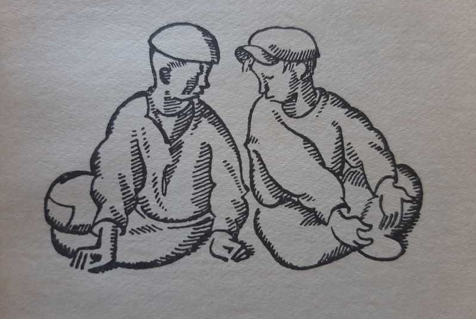
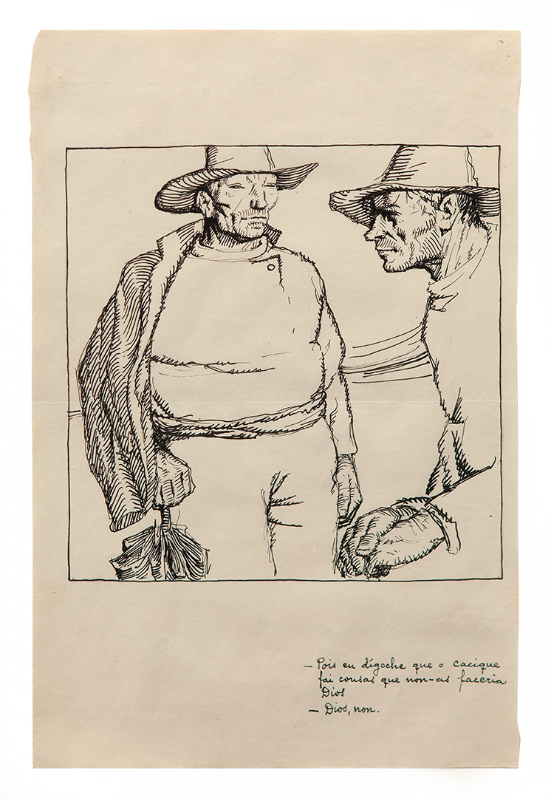
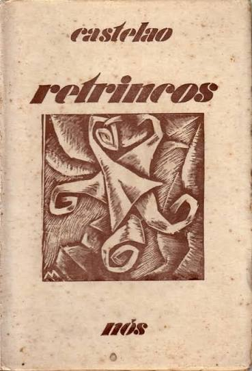
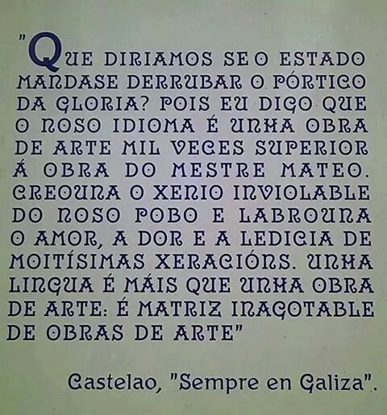

Os dous de sempre (1934)
Os dous de sempre é a única novela de Castelao. Narra a relación entre dous personaxes moi diferentes, Pedro e Rañolas, e permite reflexionar sobre a personalidade humana e a sociedade.

Castelao foi unha das figuras máis importantes da literatura galega do século XX. A súa obra combina a narración, a crítica social e a defensa da identidade cultural do pobo galego. A través dos seus escritos retratou a vida das clases populares, as desigualdades sociais e os problemas da sociedade do seu tempo.
Nesta sección veremos algunhas das súas obras máis destacadas.
É unha das súas obras máis representativas. Reúne relatos breves acompañados, na maioría dos casos, de ilustracións realizadas polo propio Castelao. Neles aborda temas como a emigración, a pobreza, a soidade e as inxustizas sociais, combinando a sensibilidade coa ironía.
Os relatos son verdadeiramente breves, pero moi potentes. Destaca moito a capacidade de Castelao para transmitir emocións e reflexionar sobre a condición humana en poucas palabras, así como a influencia da tradición oral galega.

Os dous de sempre é a única novela de Castelao. Narra a relación entre dous personaxes moi diferentes, Pedro e Rañolas, e permite reflexionar sobre a personalidade humana e a sociedade.

Pola súa banda, Retrincos reúne cinco relatos de carácter autobiográfico inspirados en distintas etapas da vida do escritor.

Sempre en Galiza é un ensaio dramático, considerado a obra canónica do nacionalismo galego. Nel se inclúen ensaios, conferencias e discursos de Castelao, xunto con material concibido especificamente para a obra.
